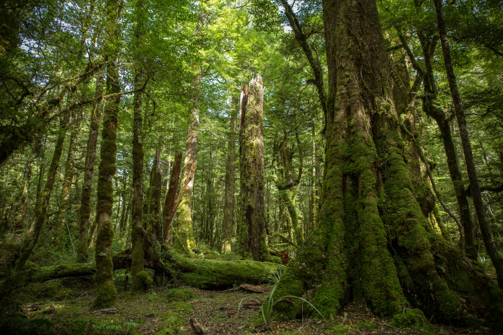
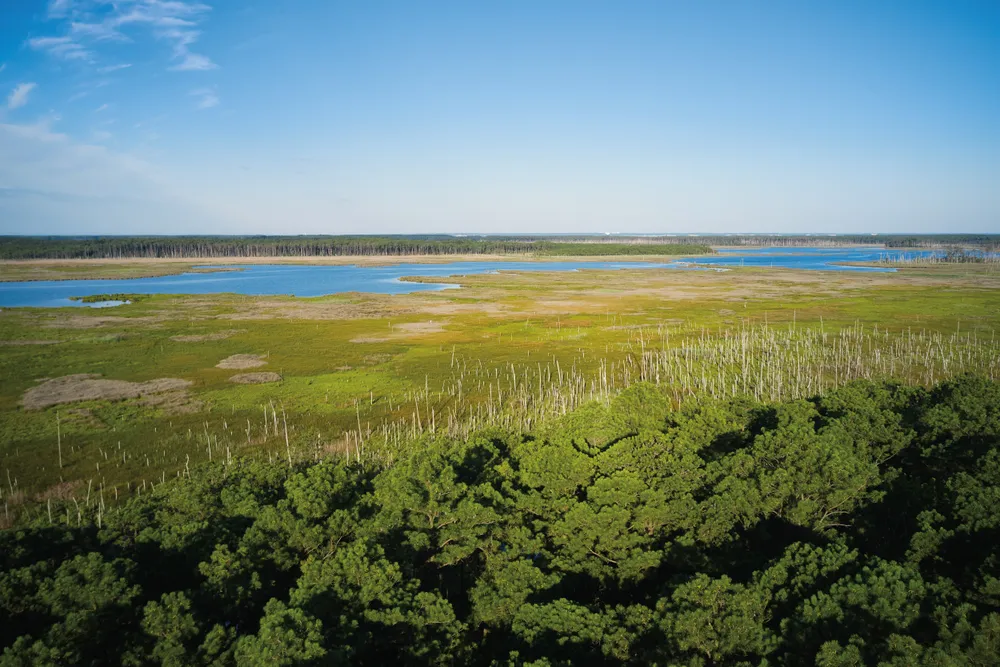

Where Does Our Wildlife Live?
Every animal needs a suitable habitat to survive. Habitats provide food, water, shelter and places for animals to raise their young. Let's explore three important habitats found in New Zealand.

01. Native Forests
New Zealand's native forests contain tall trees, ferns and mosses. They provide food and shelter for birds such as kiwi and tūī.
Did you know? Many native forest birds rely on trees for food and nesting.

02. Wetlands
Wetlands are areas where the ground is covered or soaked with water. They provide important habitats for native fish, frogs and wetland birds.
Did you know? Wetlands can help filter water and reduce flooding.
03. Alpine Environments
Alpine environments are found high in the mountains, where conditions can be cold and windy. The kea is one native bird that lives in New Zealand's alpine regions.
Did you know? Alpine plants have special adaptations that help them survive cold conditions.